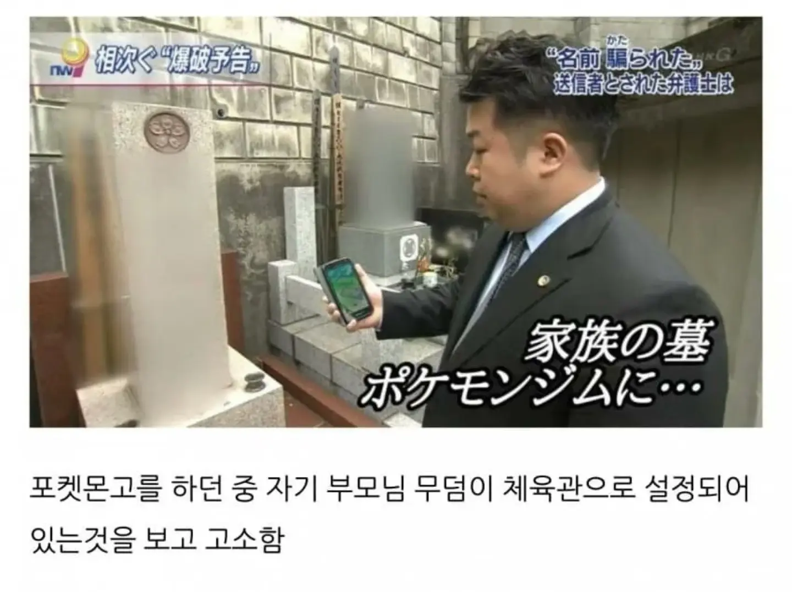

아니, 우리 부모님 묘비가 체육관이 되어버렸당께요!!!!!

아니, 우리 부모님 묘비가 체육관이 되어버렸당께요!!!!!

아쿠마다;;
너진짜나쁜아이구나
너무했다.,ㄷㄷ
팬텀 나와야지..!
그래도 부모님인데!
전에 향교 갔더니 고오스 나오더라
텅구리 나옴?
그렇게라도 한번 더 가라고
고스트 타입 체육관인가 보1지
저기서 희생의 기도 쓰면 살아남?
덧글달리는 꼬라지 보니까 고소할만하다
체육관으로 신청한 놈이 병신 아닌가 싶었는데 생각해보니 사진보고 승인한건 게임사구나
포켓스탑 승인은 같은 유저가 함
유저들이 좋아요 많이 눌러줘도 자체 반려되는 경우 부지기수임
웨이페러가 그렇게 일을 열심히 했었었음? ㅋㅋㅋ
컷 존나 때리던데
보라타운...?
성묘하러 갔더니 모르는 사람들이 폰 들고 체육관 쟁탈전 하고 있으면 화날 만하긴 하다
쟈들은 빌딩 한가운데 무덤이 있고 그럼... 주택가에도 집들 사이 한가운데 무덤 있고 그러함.
체육관이면 주변에도 스탑이 많다는건데 ㄷㄷ
고오스 나옴?